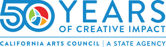
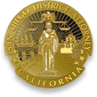
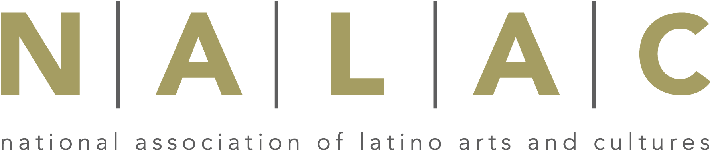
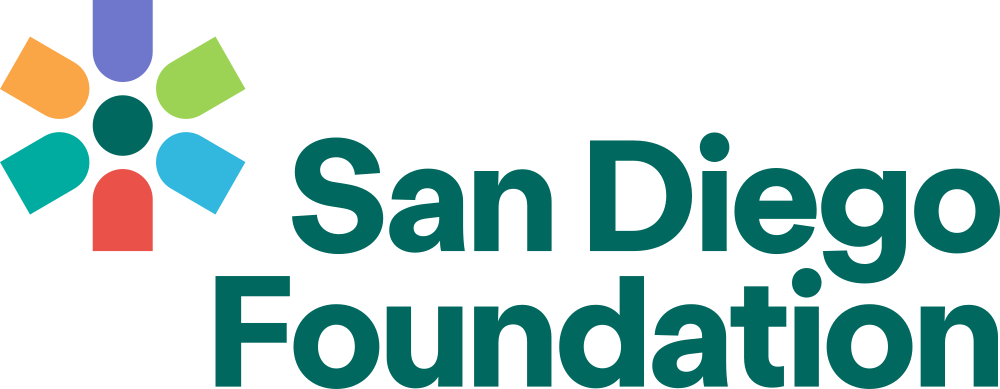
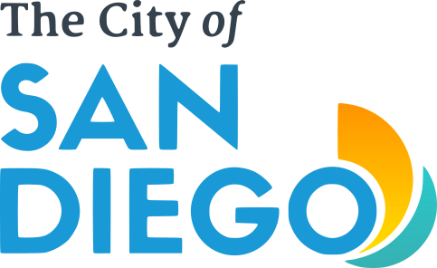

Founded in 1993 by young Chicana/o activists, Izcalli began as the Escuelita — a Saturday school. More than 30 years later, that founding conviction remains at the center of everything we do.
Izcalli is a San Diego-based nonprofit dedicated to transforming the lives of Chicana/o and Indigenous communities through cultural consciousness, the arts, education, and community dialogue.
Founded in 1993 by young Chicana/o activists, Izcalli began as the Escuelita, a Saturday school rooted in the belief that knowledge of Chicana/o and Indigenous culture is the foundation of identity, purpose, and self-determination. More than 30 years later, that founding conviction remains at the center of everything we do.

Co-Founder & Executive Director
Macedonio Arteaga Jr. is the architect of Izcalli's healing framework and the primary relationship holder with the school districts, county offices, and community networks that make its work possible. For 21 years he served as a Restorative Practices Pupil Advocate within the San Diego Unified School District's Department of Race, Human Relations and Advocacy, leading the district's restorative practices initiative, developing its first Chicana/o Studies course, and training staff district-wide in trauma-informed, culturally relevant instruction. He is a senior facilitator and National Trainer for the National Compadres Network, one of the most respected Latino-serving networks in the United States, through which he has trained practitioners across the country in Indigenous-rooted restorative practice. He is the 2024 Leader in Belonging Awardee (Prebys Foundation) and was honored by the City of San Diego, which proclaimed "Macedonio Arteaga Day" on February 27, 2007. As Executive Director, Mr. Arteaga provides the programmatic vision, community trust, and district-level access at the heart of Izcalli's work.
Co-Founder & Director of Operations
Alicia Chavez-Arteaga holds a Master of Arts in Women's Studies and a Bachelor of Science in Social Work, both from San Diego State University, and brings over 20 years of nonprofit administration experience to Izcalli's operations. As Director of Operations, she oversees compliance, financial systems, and program logistics. Earlier in her career she managed the wellness center at a San Diego high school, giving her firsthand operational knowledge of the school sites where Izcalli's circles are delivered. Her academic background in social work and gender equity ensures that Izcalli's programming is grounded in evidence-based frameworks and responsive to the specific needs of girls, non-binary youth, and others underserved by traditional mental health systems. As Director of Operations, Ms. Chavez-Arteaga is the organizational anchor ensuring Izcalli's work is executed with precision.
Board President
Mirna Hernandez is an Assistant Principal within the Escondido Union High School District and holds a Master's degree in Educational Leadership from California State University San Marcos and a Bachelor's degree in Kinesiology with a minor in Chicana/o Studies from San Diego State University. With over two decades of experience in student achievement, curriculum design, and school administration, she has been a core Izcalli leader since the organization's early years, previously serving as Camp Director for the Izcalli Youth Leadership Camp. As Board President, Ms. Hernandez provides expert guidance on youth development and educational policy, and her active role within the regional school system gives Izcalli direct insight into how its school-embedded model can best serve students' social-emotional and mental health needs.
Board Treasurer
Viviana Ochoa is a high-level auditing and governance expert with over 25 years of experience in the public accounting and defense sectors. She currently manages the internal controls function for Science Applications International Corporation (SAIC), a $6B technology leader. Her background includes directing international audits for government and nonprofit organizations across Latin America, ensuring rigorous compliance and fiscal integrity in complex environments. A veteran of nonprofit leadership, Viviana has served in executive roles for the Mexican American National Association of San Diego and the Association of Latino Professionals For America. She recently completed three terms as a board member for the Metropolitan Area Advisory Committee on Anti-Poverty and currently serves on the audit committee for the ACLU of San Diego & Imperial Counties. With an accounting degree from San Diego State University and a Board of Director Certificate from the University of San Diego, Viviana provides Izcalli with elite financial oversight.
Board Secretary
Dr. Ryan Santos is a veteran educational leader with over 20 years of experience dedicated to student advocacy and social justice in the San Diego region. Currently serving as Principal of Bayfront Charter High School in Chula Vista, Dr. Santos has played a pivotal role in the design and opening of innovative new middle and high school environments. A distinguished scholar-practitioner, he earned his Ph.D. in Education from Claremont Graduate University. His expertise in democratic schooling and restorative practices extends to higher education, where he has taught graduate-level courses at San Diego State University and the University of San Diego. As Secretary of the Izcalli Board, Dr. Santos helps ensure that Izcalli's Indigenous-rooted programs are academically rigorous, operationally sound, and strategically integrated into the educational systems serving today's youth.
Board Member
Dr. Francisco Mendoza is the Lead Physician at AltaMed Medical and Dental Group — Santa Ana Main, one of the nation's largest Federally Qualified Health Centers. A Family Medicine specialist, his practice centers on health equity, mental health, and social justice. Dr. Mendoza's personal narrative, from navigating the United States as an undocumented immigrant to becoming a lead physician, aligns with Izcalli's mission of reclaiming one's story. He holds a bachelor's degree from UCLA and a medical degree from the UC Davis School of Medicine, followed by a residency at Harbor-UCLA Medical Center. A dedicated advocate for MiMentor and the Alliance in Mentorship, he works extensively to build professional pipelines for underrepresented students. As an Izcalli board member, Dr. Mendoza bridges clinical medicine and cultural wellness.
Board Member
Victor M. Chavez Jr. has nearly 30 years of experience in the nonprofit sector (EYE Counseling & Crisis Services, YMCA of San Diego County) and higher education (San Diego Mesa College, UC San Diego, Cal State Fullerton, and Los Angeles City College). He holds a bachelor's degree in History (minor in Political Science) from UC San Diego and a Master's degree in Public Administration from the University of Washington. Victor is a graduate of the Chicano Federation of San Diego County's Leadership Training Institute (Class XV) and the Latino Academy of the William C. Velásquez Institute.
Izcalli heals intergenerational trauma and dehumanization — particularly among BIPOC youth — through a community-based, Indigenous-led model rooted in Maya-Nahua philosophy and a 7,000-year-old maíz-based culture.
Connecting physical, mental, emotional, and spiritual with community and the sacred — inherent wholeness, not symptom-suppression.
Honest dialogue in safe, substance-free spaces.
Círculo de Hombres builds vulnerability, humility, and critical consciousness.
Addressing dropout, criminalization, and self-destruction.
Youth write and perform their own stories and help run the organization.
Elders, parents, and youth share the same circle. Young people who grow up in Izcalli return as facilitators, mentors, and board members.
Respect, reciprocity, relationship, responsibility, regeneration, resistance, resilience.
The foundations and public agencies whose grants make Izcalli's cultural-healing work possible.


San Diego County District Attorney


